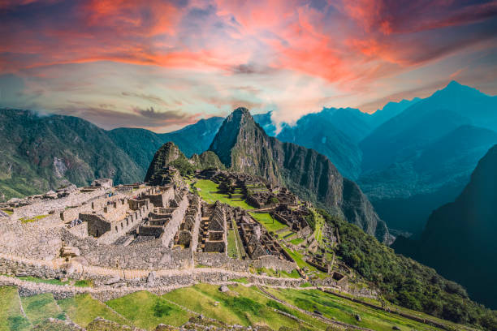

üåû Cusco y el Valle Sagrado de los Incas üèîÔ∏è
Ciudad del Cusco
- Fue la capital del Imperio Inca y considerada el "ombligo del mundo".
- En su centro se encuentra la Plaza de Armas rodeada de iglesias coloniales.
- Destaca el Qoricancha, antiguo templo del Sol, con muros de piedra incaicos.
Sacsayhuamán

- Función: Centro ceremonial y militar.
- Construcción: Gigantescos muros de piedra perfectamente encajados.
- Ubicación: A 2 km de la ciudad del Cusco, en una colina estratégica.
Valle Sagrado de los Incas
- Ubicación: Entre Pisac y Ollantaytambo, siguiendo el río Urubamba.
- Clima: Más templado y fértil que el Cusco, ideal para la agricultura.
- Producción: Maíz, papas y otros cultivos importantes para los Incas.
Ollantaytambo
- Fortaleza y ciudad inca en el Valle Sagrado.
- Función: Militar, religiosa y agrícola.
- Conserva casas incas habitadas hasta la actualidad.